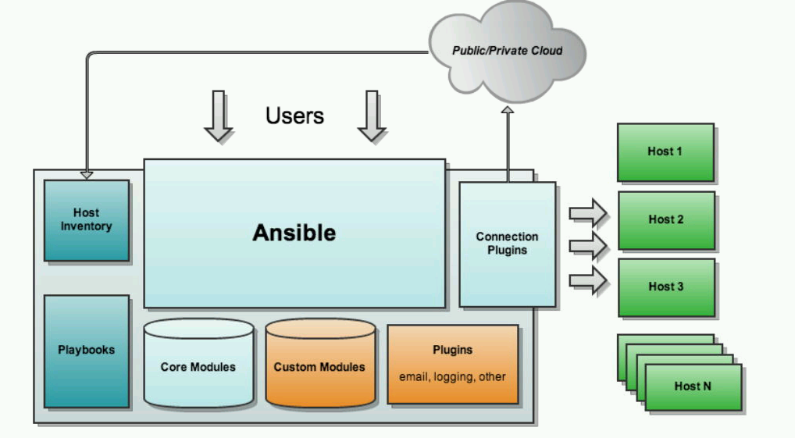

Ansible
1 Ansible 简介
1.1 概述
Ansible 这个简单易学的自动化工具可以满足业务线在速度和简洁性方面日益增加的需求，让我们更高效的同时管理多台服务器不再是想想而已。
Ansible 是一款基于 python 开发，能够实现了批量系统配置、程序部署、运行命令等功能的自动化运维工具。Ansible 主要是基于模块进行工作的，本身没有批量部署的能力，真正实现部署功能的是运行的模块。
和 Chef、Puppet 刚好相反，Ansible 使用的是无代理体系结构，这种体系结构可以通过防止节点轮询控制机器来减少网络开销。Ansible 提供的结果框架如下所示：

Ansible ：运行在中央计算机上；
Connection Plugins ：连接插件，主要用于本地与操作端之间的连接与通信；
Host Inventory：指定操作的主机，是一个配置文件里面定义监控的主机；
Modules：核心模块、自定义模块等等；
Plugins ：使用插件来完成记录日志、邮件等功能；
Playbooks：执行多任务，通过 SSH 部署模块到节点上，可多个节点也可以单个节点。
Ansible 主要有两种类型的服务器：控制机器和节点。控制机器用于控制协调，而节点由控制机器通过 SSH 进行管理，并且控制机通过 inventory 来描述节点的位置。在节点的编排上，Ansible 通过 SSH 部署模块到节点上，模块临时存储在节点上，并以标准输出的 JSON 协议进行通信，从而在远程机上检索信息，发送命令等。
1.2 特点
Ansible 是基于 python 开发而来，维护相对简单，同时开发库也比基于 Ruby （一种面向对象的程序设计的脚本语言）的运维工具要多。
Ansible 默认通过 SSH 协议进行管理。同时 Ansible 是基于 python 的一个模块（paramiko）开发的，遵循 SSH 协议，支持加密和认证的方式来进行远程服务器连接，因此 Ansible 不需要客户端和服务端。
Ansible 可以通过命令来简单执行一些任务，也可以通过 playbook （后面会讲）的配置脚本来执行复杂任务，同时 playbook 不用分发到远程，在本地就可以执行。
Ansible 中的 playbook 使用的是 Jinja2 （基于 python 的模板引擎），简单易学。
Ansible 基于模块工作，易于扩展，而模块可以用任何语言编写，并以标准输出的 JSON 协议进行通信。
Ansible 是开源的软件，在 GitHub 上有公开的代码。
1.3 安装
安装方法参考 Ansible 官方安装手册。
# 需要更新软件包的信息以及安装通用的管理软件库的工具
sudo apt update
sudo apt install software-properties-common
# 添加 ansible 的源，将 PPA 添加到系统中去
sudo apt-add-repository --yes --update ppa:ansible/ansible
# 更新软件包信息，了解 PPA 中可用的包，然后安装 ansible 软件
sudo apt update
sudo apt install -y ansible
# 查看 Ansible 的版本信息
ansible --version
PPA（Personal Package Archives），个人软件包档案，Ubuntu Launchpad 网站提供的一项源服务，允许个人用户上传软件源代码，通过 Launchpad 进行编译并发布的二进制 deb 软件包，这样使用者就可以便捷的安装最新版的软件。
Ansible 安装完成后，不会添加数据库，也不会有守护进程启动或继续运行。你只需要把它安装在至少一台机器上，它可以从该中心点来管理远程机器了。